| 続・心理統計学の基礎 |
| 続・心理統計学の基礎 |
 分布
分布| 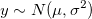 | (1.1) |
のとき、
 |
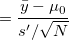 | (1.2) | ||
 |
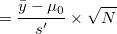 | (1.3) |
は、帰無仮説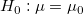が真なら自由度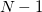の分布に従うが、偽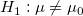であれば、自由度、非心度
 |
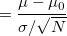 | (1.4) | ||
|
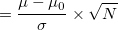 | (1.5) | ||
|
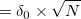 | (1.6) |
の非心分布に従う。
Rの関数pt()とqt()を用いて、特定の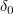と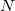の下での検定力を算出することができる。 非心度はncpで指定。
> ### 1標本t検定の検定力
> t.power <- function(d0,n){
+ lambda <- d0*sqrt(n)
+ p.lwr <- pt(qt(0.025,df=n-1),df=n-1,ncp=lambda,lower.tail=T)
+ p.upr <- pt(qt(0.975,df=n-1),df=n-1,ncp=lambda,lower.tail=F)
+ power <- p.lwr+p.upr
+ return(power)
+ }
> t.power(d0=c(0.2,0.5,0.8),n=10)
[1] 0.08765715 0.29317561 0.61623276
> t.power(d0=c(0.2,0.5,0.8),n=20)
[1] 0.1359563 0.5645044 0.9238988
> t.power(d0=c(0.2,0.5,0.8),n=40)
[1] 0.2345965 0.8693981 0.9985194
| (1.7) |
のとき、
 |
(1.8) |
は、自由度1、非心度
|
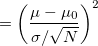 | (1.9) | ||
|
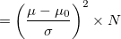 | (1.10) | ||
|
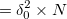 | (1.11) |
の非心カイ2乗分布に従う1。
Rの関数pchisq()とqchisq()を用いて、特定のとの下での検定力を算出することができる。
> ### カイ2乗分布における検定力
> chisq.power <- function(d0,n){
+ lambda <- d0^2*n
+ power <- pchisq(qchisq(p=0.95,df=1),df=1,ncp=lambda,lower.tail=F)
+ return(power)
+ }
> chisq.power(d0=c(0.2,0.5,0.8),n=10)
[1] 0.09693545 0.35260808 0.71561661
> chisq.power(d0=c(0.2,0.5,0.8),n=20)
[1] 0.1454725 0.6087795 0.9471412
> chisq.power(d0=c(0.2,0.5,0.8),n=40)
[1] 0.2441412 0.8853791 0.9990314
Footnotes
| 続・心理統計学の基礎 |